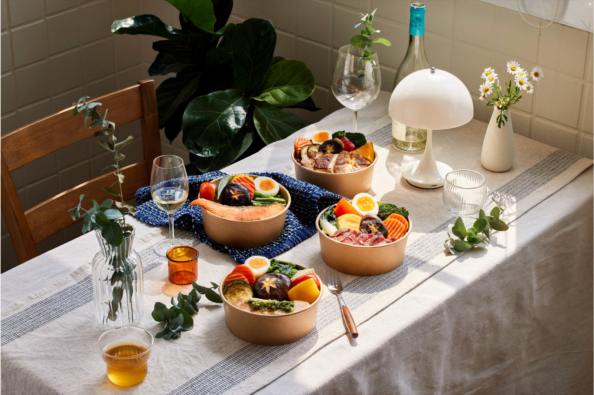
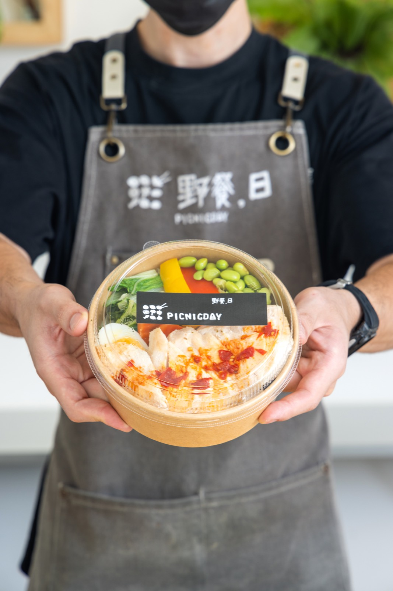
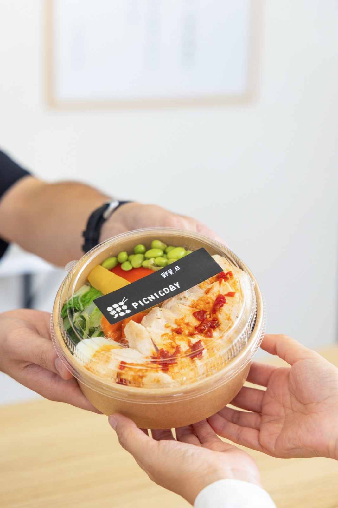
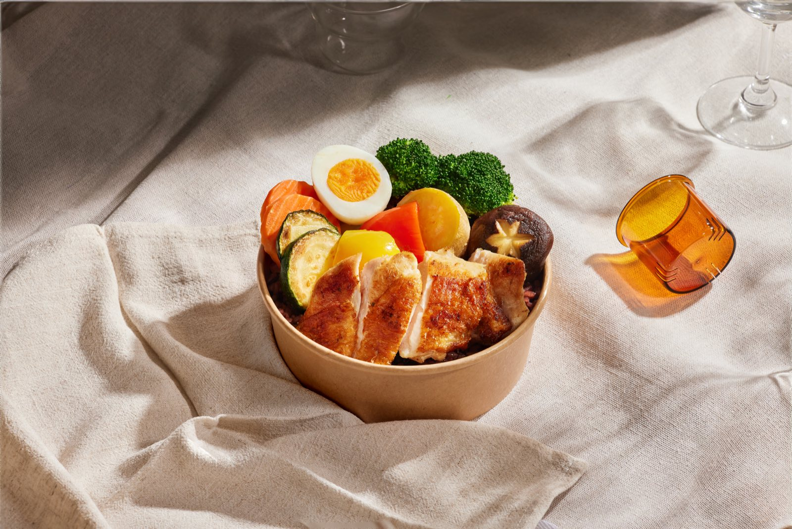

野餐日已具備連鎖健康餐品牌規模。傑弗德的參與以專業諮詢、設備及供應商建議、配方與製程打樣為主，協助總部思考哪些工作適合集中處理、哪些操作可以簡化，以及如何累積未來能持續提供給加盟門市的產品與技術內容。

隨著連鎖規模擴大，總部需要更多能支援門市的產品、配方與製程選項，降低第一線各自處理的複雜度。
從總部與門市的工作分配出發，檢視粉料、醬料、設備與 SOP，透過諮詢和打樣提出可逐步採用的方案。
合作累積了設備運用、配方與製程的建議及試作內容，作為總部後續規劃新品、調整操作與支援加盟門市的參考。
01 ／ 案例背景
野餐日是一個連鎖輕食健康餐品牌。合作時，品牌已經有一定的門市規模，關注的是如何強化總部能提供的支援，讓加盟門市在產品與操作上有更多可使用的資源。傑弗德以餐飲顧問接觸不同現場與製程的經驗，提供設備、供應商、調味、研發及 SOP 方面的建議，協助總部拓展可選擇的做法。
02
連鎖營運需要思考總部與第一線的分工。部分調味、前處理或技術工作，若能整理成總部端可提供的支援，門市就有機會減少自行判斷與執行的負擔。同時，品牌需要累積後續產品選項，讓配方、調味與製程的研發逐步成為總部能持續提供給加盟者的資源。
03
04
為什麼：加盟門市需要的不只有品牌名稱，也包含具體產品、調味與操作支援。
影響：針對肉類、粉料、醬料及調味組合提供配方與打樣建議，討論哪些內容可以由總部掌握，逐步累積品牌自身的技術與產品資源。
為什麼：同類工作可能有不同設備與製作方式，值得評估是否能整合、簡化。
影響：提供設備選型及功能整合建議，並協助與供應商、設備商討論，評估能否用一部設備整合原本分散的工作；具體做法仍需配合產品與現場條件打樣確認。
為什麼：有些工作若能前移至總部處理，可望讓門市更容易管理與執行。
影響：從調味、製作與組裝步驟檢視 SOP，建議將適合集中處理的內容拉回總部，留下較容易執行的操作給第一線。
為什麼：連鎖品牌需要持續更新產品及提供加盟支援，研發內容可以依需求逐步使用。
影響：透過調料、配方、組裝組合、打樣與試菜，提供總部後續可評估的產品及製程選項。
05
06
檢視連鎖營運與總部支援方向。
協助供應商、設備商溝通及設備選型。
整理肉類、粉料、醬料與調味的研發選項。
評估設備功能與製程整合的可行方向。
梳理總部與門市工作分配，降低現場複雜度。
案例影像



07 ／ 合作價值
這次合作透過諮詢、配方與製程打樣，為總部補充設備運用、產品研發及門市操作的選項。其價值在於累積可以逐步評估和採用的專業內容，支持品牌持續完善對加盟門市的服務。
本頁依專案經驗整理；研發與試作內容的實際採用情況，依品牌後續需求、設備條件及個別約定範圍為準。
可以從設備、配方與門市分工一起檢視，先找出值得集中與簡化的環節。